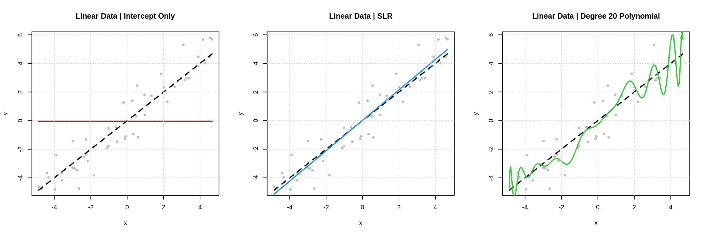
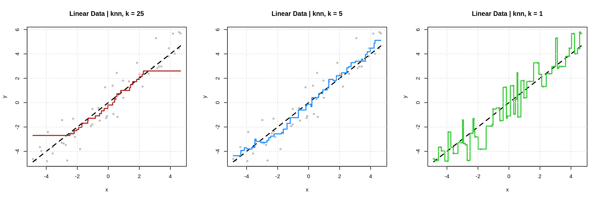
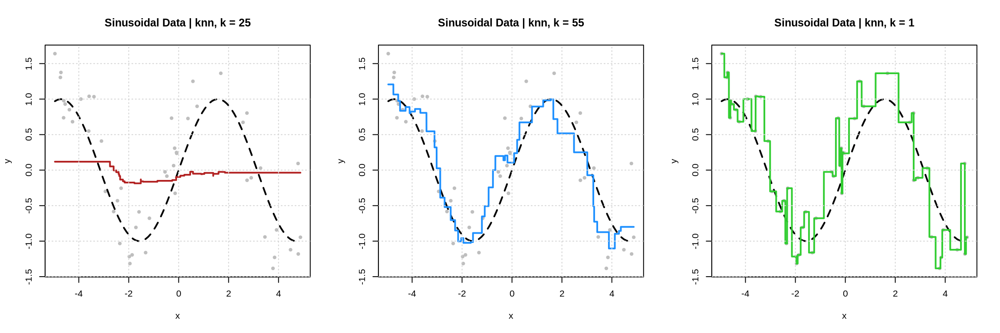
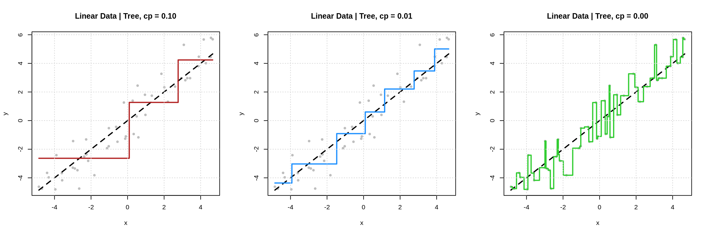

Chapter 9 Regression
BLUF:
Use regression, which is one of the two supervised learning tasks (the other being classification) to make predictions of new observations of numeric response variables.
Start by randomly splitting the data (which includes both the response and the features) into a test set and a training set.
Do not use the test data for anything other than supplying a final assesment of how well a chosen model performs at the prediction task.
That is, never use the test data to make any modeling decisions.
Use the training data however you please, but it is recommended to further split this data into an estimation set and a validation set.
The estimation set should be used to train models for evaluation. For example, use the estimation data to learn the model parameters of a parametric model.
Do not use data used in training of models (the estimation data) when evaluating models as doing so will mask overfitting of complex (flexible) models.
Use the lm() function to train linear models.
Use the knnreg() function from the caret pacakge to train k-nearest neighbors models.
Use the rpart() function from the rpart package to train decision tree models.
Use the validation set to evaluate models that have been trained using the estimation data. For example, use the validation data to select the value of tuning parameters that are often used in non-parametric models.
Use numeric metrics such as root-mean-square error (RMSE) or graphical summaries such as actual versus predicted plots.
Although it ignores some practical and statistical considerations (which will be discussed later), the model that acheives the lowest RMSE on the validation data will be deemed the “best” model. After finding this model, refit the model to the entire training dataset. Report the RMSE of this model on the test data as a final quantification of performance.
- TODO: add ISL readings
- TODO: <www.stat420.org>
- TODO: add “why least squares?” readings
9.1 Setup
\[ Y = f(X) + \epsilon \]
- TODO: signal \(f(X)\)
- TODO: noise \(\epsilon\)
- TODO: goal: learn the signal, not the noise
- TODO: random variables versus potential realized values
\[ X = (X_1, X_2, \ldots, X_p) \]
\[ x = (x_1, x_2, \ldots, x_p) \]
\[ \mathbb{E}\left[\left(Y - f(X)^2 \right)\right] = \]
- TODO: define regression function
\[ f(x) = \mathbb{E}[Y \mid X = x] \]
- TODO: want to learn these “things” which are regression functions
gen_sim_data = function(f, sample_size = 50, sd = 1) {
x = runif(n = sample_size, min = -5, max = 5)
y = rnorm(n = sample_size, mean = f(x), sd = sd)
tibble::tibble(x = x, y = y)
}set.seed(5)
line_data = gen_sim_data(f = line_reg_fun, sample_size = 50, sd = 1.0)
quad_data = gen_sim_data(f = quad_reg_fun, sample_size = 50, sd = 2.0)
sine_data = gen_sim_data(f = sine_reg_fun, sample_size = 50, sd = 0.5)set.seed(42)
line_data_unseen = gen_sim_data(f = line_reg_fun, sample_size = 100000, sd = 1.0)
quad_data_unseen = gen_sim_data(f = quad_reg_fun, sample_size = 100000, sd = 2.0)
sine_data_unseen = gen_sim_data(f = sine_reg_fun, sample_size = 100000, sd = 0.5)
9.2 Modeling
- TODO: for now, only use formula syntax
9.2.1 Linear Models
- TODO: assume form of mean relationship. linear combination
- TODO: how to go from y = b0 + b1x1 + … + eps to
lm(y ~ stuff) - TODO: least squares, least squares is least squares (difference in assumptions)
lm_line_int = lm(y ~ 1, data = line_data)
lm_line_slr = lm(y ~ poly(x, degree = 1), data = line_data)
lm_line_ply = lm(y ~ poly(x, degree = 20), data = line_data)
9.2.2 k-Nearest Neighbors
- TODO:
caret::knnreg() - TODO: for now, don’t worry about scaling, factors, etc.
9.2.2.1 Linear Data
knn_line_25 = knnreg(y ~ x, data = line_data, k = 25)
knn_line_05 = knnreg(y ~ x, data = line_data, k = 5)
knn_line_01 = knnreg(y ~ x, data = line_data, k = 1)
| k | Train RMSE | Test RMSE |
|---|---|---|
| 25 | 1.406 | 1.379 |
| 5 | 0.931 | 1.061 |
| 1 | 0.000 | 1.409 |
9.2.2.2 Quadratic Data
knn_quad_25 = knnreg(y ~ x, data = quad_data, k = 25)
knn_quad_05 = knnreg(y ~ x, data = quad_data, k = 5)
knn_quad_01 = knnreg(y ~ x, data = quad_data, k = 1)
| k | Train RMSE | Test RMSE |
|---|---|---|
| 25 | 6.393 | 6.564 |
| 5 | 2.236 | 2.509 |
| 1 | 0.000 | 3.067 |
9.2.2.3 Sinusoidal Data
knn_sine_25 = knnreg(y ~ x, data = sine_data, k = 25)
knn_sine_05 = knnreg(y ~ x, data = sine_data, k = 5)
knn_sine_01 = knnreg(y ~ x, data = sine_data, k = 1)
| k | Train RMSE | Test RMSE |
|---|---|---|
| 25 | 0.814 | 0.841 |
| 5 | 0.349 | 0.570 |
| 1 | 0.000 | 0.647 |
9.2.3 Decision Trees
- TODO:
rpart::rpart() - TODO: https://cran.r-project.org/web/packages/rpart/vignettes/longintro.pdf
- TODO: http://www.milbo.org/doc/prp.pdf
- TODO: maybe notes about pruning and CV
9.2.3.1 Linear Data
tree_line_010 = rpart(y ~ x, data = line_data, cp = 0.10, minsplit = 2)
tree_line_001 = rpart(y ~ x, data = line_data, cp = 0.01, minsplit = 2)
tree_line_000 = rpart(y ~ x, data = line_data, cp = 0.00, minsplit = 2)
| k | Train RMSE | Test RMSE |
|---|---|---|
| 25 | 1.394 | 1.548 |
| 5 | 0.914 | 1.144 |
| 1 | 0.000 | 1.409 |
9.2.3.2 Quadratic Data
tree_quad_010 = rpart(y ~ x, data = quad_data, cp = 0.10, minsplit = 2)
tree_quad_001 = rpart(y ~ x, data = quad_data, cp = 0.01, minsplit = 2)
tree_quad_000 = rpart(y ~ x, data = quad_data, cp = 0.00, minsplit = 2)
| k | Train RMSE | Test RMSE |
|---|---|---|
| 25 | 3.376 | 3.869 |
| 5 | 1.692 | 2.621 |
| 1 | 0.000 | 3.067 |
9.2.3.3 Sinusoidal Data
tree_sine_010 = rpart(y ~ x, data = sine_data, cp = 0.10, minsplit = 2)
tree_sine_001 = rpart(y ~ x, data = sine_data, cp = 0.01, minsplit = 2)
tree_sine_000 = rpart(y ~ x, data = sine_data, cp = 0.00, minsplit = 2)
| k | Train RMSE | Test RMSE |
|---|---|---|
| 25 | 0.414 | 0.659 |
| 5 | 0.235 | 0.629 |
| 1 | 0.000 | 0.647 |
9.3 Procedure
- TODO: Look at data
- TODO: Pick candiate models
- TODO: Tune / train models
- TODO: Pick “best” model
- based on validation RMSE (note the issues with this)
- TODO: Use best model / report test metrics
9.4 Data Splitting
- TODO: want to generalize to unseen data
TODO: for now, all variables should either be numeric, or factor
- TODO: Training (Train) Data
- TODO: Testing (Test) Data
- TODO: Estimation Data
- TODO: Validation Data
\[ \mathcal{D} = \{ (x_i, y_i) \in \mathbb{R}^p \times \mathbb{R}, \ i = 1, 2, \ldots n \} \]
\[ \mathcal{D} = \mathcal{D}_{\texttt{trn}} \cup \mathcal{D}_{\texttt{tst}} \]
\[ \mathcal{D}_{\texttt{trn}} = \mathcal{D}_{\texttt{est}} \cup \mathcal{D}_{\texttt{val}} \]
9.5 Metrics
- TODO: RMSE
\[ \text{rmse}\left(\hat{f}_{\texttt{set}}, \mathcal{D}_{\texttt{set}} \right) = \sqrt{\frac{1}{n_{\texttt{set}}}\displaystyle\sum_{i \in {\texttt{set}}}^{}\left(y_i - \hat{f}_{\texttt{set}}({x}_i)\right)^2} \]
\[ \text{RMSE}_{\texttt{trn}} = \text{rmse}\left(\hat{f}_{\texttt{est}}, \mathcal{D}_{\texttt{est}}\right) = \sqrt{\frac{1}{n_{\texttt{est}}}\displaystyle\sum_{i \in {\texttt{est}}}^{}\left(y_i - \hat{f}_{\texttt{est}}({x}_i)\right)^2} \]
\[ \text{RMSE}_{\texttt{val}} = \text{rmse}\left(\hat{f}_{\texttt{est}}, \mathcal{D}_{\texttt{val}}\right) = \sqrt{\frac{1}{n_{\texttt{val}}}\displaystyle\sum_{i \in {\texttt{val}}}^{}\left(y_i - \hat{f}_{\texttt{est}}({x}_i)\right)^2} \]
\[ \text{RMSE}_{\texttt{tst}} = \text{rmse}\left(\hat{f}_{\texttt{trn}}, \mathcal{D}_{\texttt{tst}}\right) = \sqrt{\frac{1}{n_{\texttt{tst}}}\displaystyle\sum_{i \in {\texttt{tst}}}^{}\left(y_i - \hat{f}_{\texttt{trn}}({x}_i)\right)^2} \]
- TODO: MAE
- TODO: MAPE
- https://en.wikipedia.org/wiki/Mean_absolute_percentage_error
- but probably don’t use
9.6 Model Complexity
- TODO: what determines the complexity of the above models?
- lm: terms, xforms, interactions
- knn: k (also terms, xforms, interactions)
- tree: cp (with rpart, also others that we’ll keep mostly hidden) (also terms, xforms, interactions)
9.7 Overfitting
- TODO: too complex
- TODO: usual picture with training and validation error
- TODO: define for the purposes of this course
9.8 Multiple Features
- TODO: more features = more complex
- TODO: how do the three models add additional features?
9.9 Example Analysis
TODO: Diamonds analysis
TODO: model.matrix()
9.10 MISC TODOS
- lex fridman with ian: dataset (represent), model, optimize
- want to minimize E[(y - y_hat)^2]
- predict() creates estimate of E[Y|X] with supplied model